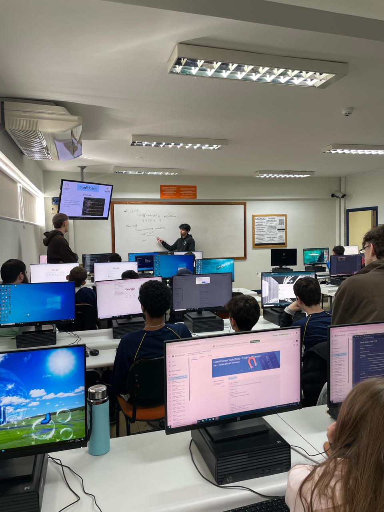

Relatório – 9ª Aula
Data: 04/05/2026
Turma: 8º e 9º ano
Instrutor: Kawan
Relatório – Condicionais e laços de repetição
Na aula de hoje nos encaminhamos para os conteudos finais de javascript, onde o instrutor Kawan começou explicando o que são as condicionais e como elas são feitas. As condicionais, de uma forma geral, são estruturas de comandos que expressam cenários onde uma ação ou resultado depende de uma condição específica. Depois foi apresentada as condicionais que podem ser usadas no JavaScript, que são: O if else, o Switch case e o Switch case com default. Onde cada uma funciona de uma forma diferente. Durante a explicação de cada tipo de condicionais nós fizemos juntos um pequeno exemplo para ver como elas funcionam na prática.
Após as condicionais partimos para os laços de repetições, que são estruturas de comandos que permitem executar um bloco de código várias vezes, automatizando tarefas repetitivas com base em uma condição. Após isso foi apresentada, também, os tipos de laços que podem ser feitos no JavaScript, que são: o for if, for in, for of, while e do while. Durante a explicação de cada laço fizemos um exemplo para fixar a sintáxe e por, na prática, cada tipo de laço apresentado.
Depois da explicação, o Kawan usou uma condicional dentro de um laço de repetição para mostrar que é possível usar mais de um tipo de comando para realizar certas atividades. No final fizemos um Kahoot com o conteúdo da aula para testar os conhecimentos absorvidos e descontrair um pouco da explicação cheia de detalhes. percebi que os alunos diveram bastante dificuldade nesse conteúdo, que pode ser explicado pela complexidade e quantidade de detales que cada tipo de condição e laço tem.
